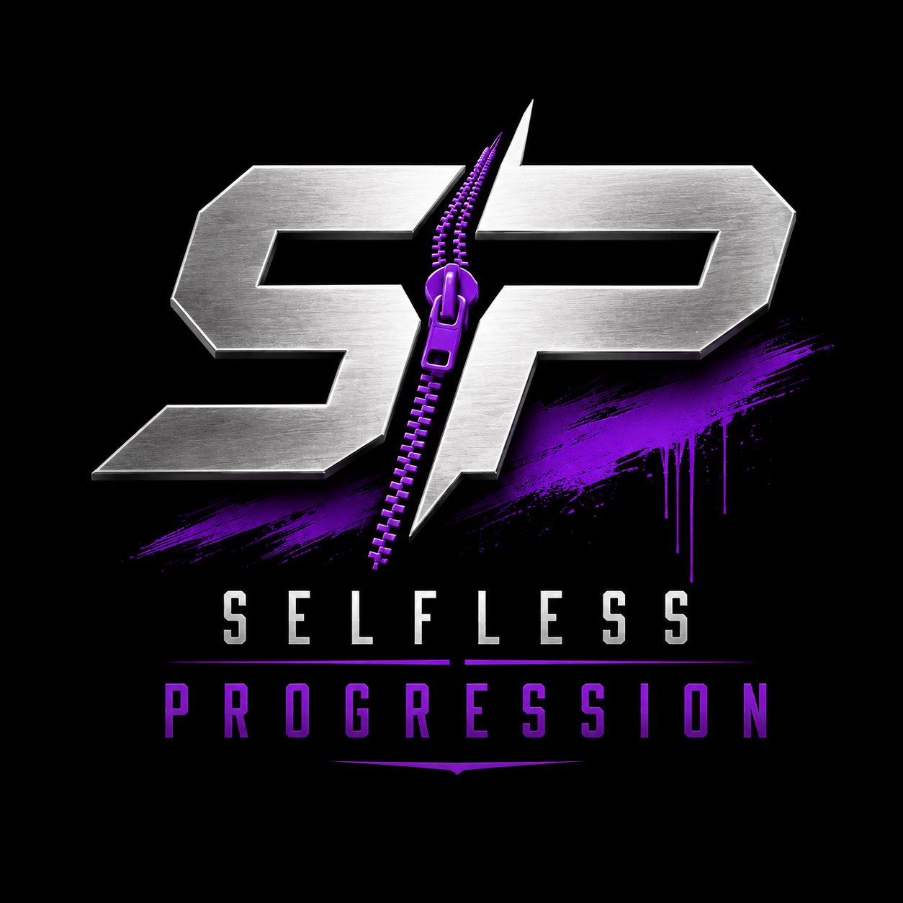

REAL-WORLD FUNCTION
Adaptive features built around the actual routines, movement, and access needs of the wearer.
Adaptive fashion / Built forward
Fashion should move with the person wearing it. Selfless Progression combines real-world function, intentional construction, and street-luxury attitude without turning accessibility into an aesthetic.

A better standard
The first idea came from one everyday problem that should have had a better solution.
For a prosthetic wearer, accessing or removing a prosthetic while driving can mean fighting with clothing that was never designed for the situation. A discreet zipper integrated into the pant leg changes that.
Selfless Progression takes that idea further: make adaptive function feel intentional, stylish, and worthy of the same design attention as any other fashion product.
Progress doesn’t leave people behind.
Adaptive features built around the actual routines, movement, and access needs of the wearer.
Chrome, black, electric purple, strong typography, and a visual identity that feels like fashion—not equipment.
The prosthetic-access pant can be the first move, not the final destination. Denim, workwear, athleisure, and more can follow.
Walk through the concept store and see how Selfless Progression could look with a real product line.
Enter the Shop